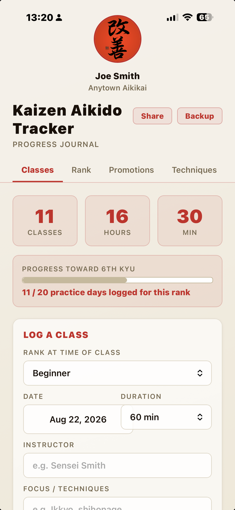
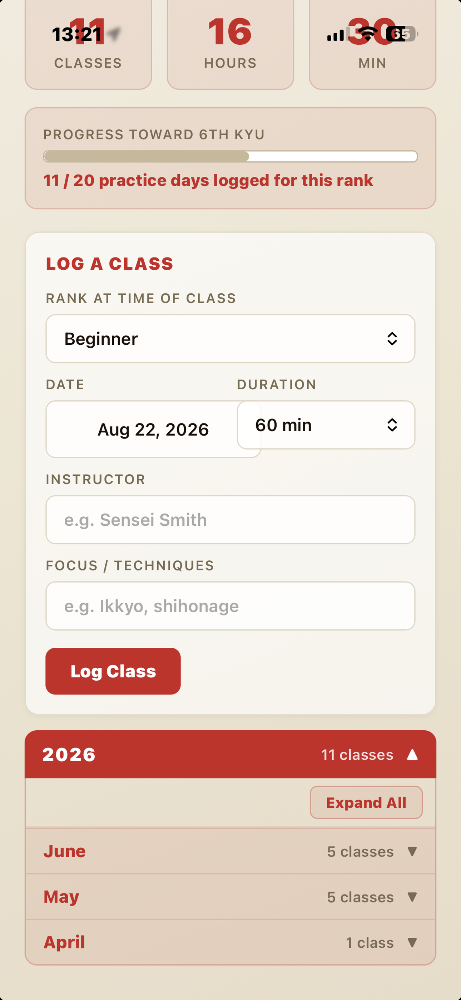
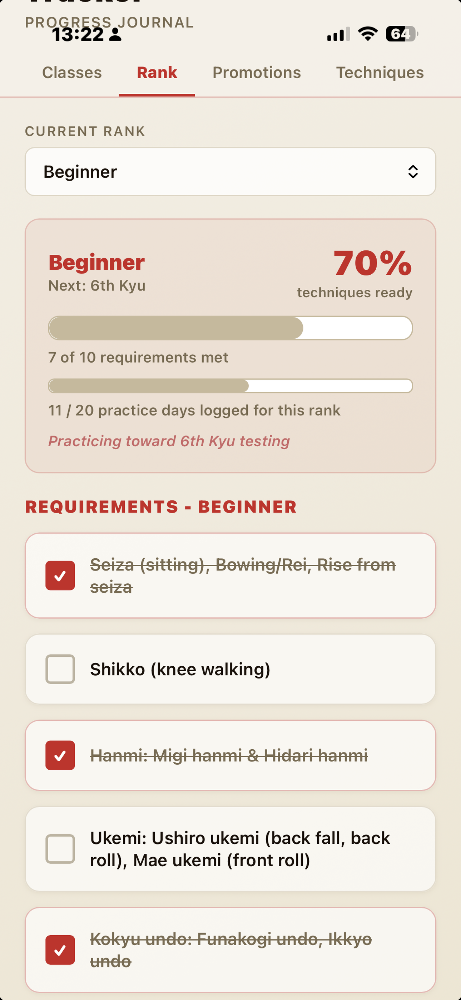
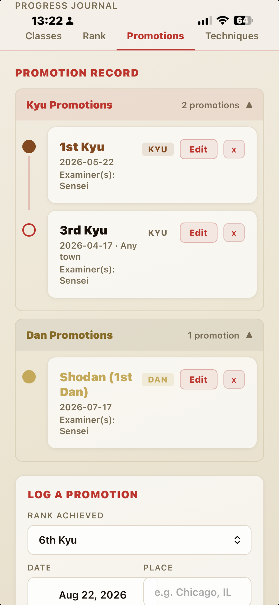
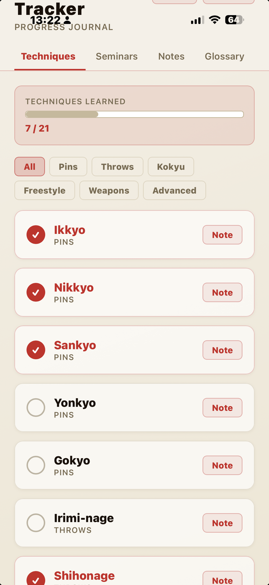

Kaizen Aikido Tracker
改善: continuous improvement. That's the philosophy behind Kaizen Aikido Tracker, the app designed for aikido students and instructors. Whether you're working toward your first kyu test or your black belt exam, every class logged, every technique checked off, and every promotion recorded honors the tradition of kaizen: always growing, never finished.

See it in action
A look inside the actual app, from logging a class to tracking rank and technique progress.




Track Every Class
Log each training session with date, instructor, duration, and focus techniques. Your full class history, organized by rank, sorted by date, and always at your fingertips.
Monitor Your Rank Progress
From Beginner through Yondan, Kaizen tracks your progress against official test requirements. See exactly how many practice days you've logged and which techniques you still need before your next exam.
Record Your Promotions
Every rank you earn is a milestone worth remembering. Log the date, location, and examiner for each promotion, building a permanent record of your aikido journey from your first test to black belt and beyond.
Grow Through the Techniques
A complete checklist of aikido techniques organized by category: pins, throws, weapons, freestyle, and more. Track your progress, add personal notes, and embrace the journey. Every technique is a lesson still unfolding.
Log Your Seminars
Seminars are a key part of advancing in rank. Track every event you attend: instructor, location, duration, and takeaways, all in one place.
Built-in Glossary
New to the terminology? The full official aikido nomenclature is built right in: 46 terms with clear definitions, searchable and always available, even offline.
Share With Your Sensei
Generate a full progress report, including class dates by rank, techniques learned, and promotion history, and export it as a PDF or share it instantly with your instructor.
Your Data, Your Device
Kaizen Aikido Tracker works completely offline. Your training data stays on your device, private and secure. Export a backup anytime to keep your records safe.
Represent a Different Aikido Organization?
Kaizen Aikido Tracker was built with a flexible rank and requirements framework that adapts well to different federations, styles, and dojos. If your organization is interested in a version tailored to your own curriculum, terminology, or promotion standards, we'd welcome the conversation.
Contact UsApps from On the Hunt for Fun!
On the Hunt for Fun! is a travel YouTube channel. These apps grew out of the same restlessness: a training log, a countdown that felt fun to look at, a map I could share with the people I travel with. Happy to hear what you think.